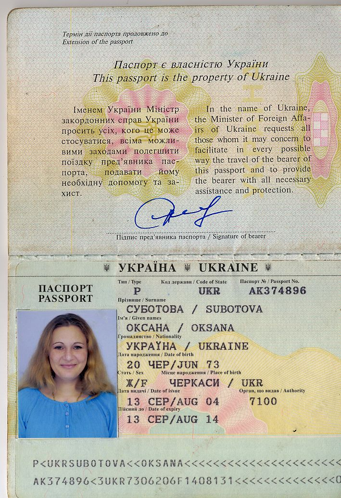

Форум 1
Форум 2
Форум 3
|
ОКСАНА СУБОТОВА - СОТРУДНИЦА-ВОРОВКА, АВАНТЮРИСТКА И МОШЕННИЦА
Ms. OKSANA SUBOTOVA IS OUR FORMER ASSOCIATE WHO HAS STOLLEN MONEY FROM US. HER ACCOMPLICE IS AN EGYPTIAN GENTLEMAN NAMED MOHEB LOUIS TADROS
|
ЖИТЕЛЬНИЦА УКРАИНЫ, ЕГИПТА, А ТЕПЕРЬ И США (СМОТРИТЕ РЕЗЮМЕ). Egyptian, Ukrainian and US resident. Please see her CV below. |
|
В сентябре 2008 года к нам попросилась на работу гражданка Суботова Оксана Антоновна (Subotova Oksana Antonovna), которая оказалась великой актрисой, так как ей удалось ввести в заблуждение нашего весьма опытного менеджера, Наталью Викторовну Шахову, внушив ей идею, что она (Суботова Оксана/Subotova Oksana) является честным и порядочным человеком.
Оксана Суботова, без предупреждения, бросила работу в конце декабря 2008 года и, по ее словам, вылетела в Египет по "неотложным семейным обстоятельствам" (подвела Михаила Шестова и всех студентов, как очников, так и заочников). В этот период заказы не выполнялись, очные курсы не проводились. Вернулась 16 января. К работе "приступила", типа, 18 января. Сделать, правда, ничего особенного не успела, так как ей пришлось снова "сбежать", в день приезда в Нью-Йорк Михаила Шестова (целью приезда было повышение квалификации сотрудницы Оксаны Суботовой), 2 февраля 2009 года. Причем, по ее словам, она потеряла все телефоны, включая свой и главный деловой телефон Центра Шестова. В этот раз, она "вылетала по семейным обстоятельствам" в Киев (что ТОЖЕ оказалось ложью, так как она просто переезжала с квартиры на квартиру)... :) Комедия продолжилась возвращением Оксаны Суботовой из "Киева", 6 февраля и, в этот же день, новым побегом с работы и последующим счастливым возвращением "блудной дочери" в лоно SupremeLearning, где-то в конце февраля, с оговоркой, что она "теперь не сможет работать в полную силу и будет, в основном, отвечать на телефонные звонки"...
Следующий побег случился в апреле, когда Михаил Шестов, в очередной раз, приехал повышать квалификацию сотрудницы Оксаны Суботовой (Oksana Subotova). По словам ее американского мужа, Сергея, она украла у него 30 тысяч долларов из сейфа и "рванула в Египет". Нет нужды говорить, что она ОПЯТЬ бросила (без предупреждения!) работу в Центре Михаила Шестова. Вернулась Оксана только к маю. Сделала вид, что приступает к работе, но потом ОПЯТЬ у нее украли паспорт, все кредитки и кошелек с деньгами (по ее словам, конечно же). Это позволило ей получить свою долю жалости от окружающих и не заплатить за аренду офиса в Нью-Йорке (денег-то нет!). А 12 мая госпожа Суботова ОПЯТЬ сбежала, теперь уже (за несколько дней до этого) СНЯВ ВСЕ деньги с деловых счетов Центра Михаила Шестова (слава Богу, их там было немного). После снятия, сообщила нам, что деньги, обязательно, вернет и опять сбежала. Причем, в этот раз с главным деловым телефоном (1-917-208-7434), дебетовой карточкой, всеми паролями от наших служб. Теперь уже, кажется, с концами, так как она оставила в офисе записку, объясняющую как мы САМИ должны зарабатывать деньги, чтобы покрыть созданный ей минус на счетах.
Финансовая отчетность не велась с прошлого года. Количество денег, полученных от студентов очников и заочников Оксаной Суботовой (Oksana Subotova) нам неизвестно. Действия Оксаны привели к прямым финансовым потерям более чем 20 тысяч долларов. Работой с очниками (доучиванием) будет заниматься Айрин Сафронова, телефон: 1-917-208-9964.
В результате, Михаил Шестов полностью отказывается от бесплатного консультирования студентов, проживающих на Украине, до тех пор, пока Оксана Суботова (Oksana Subotova) не вернет ему то, что ей не принадлежит. До тех пор, пока кто-нибудь из влиятельных земляков или энтузиастов не воздействует на Мадам Суботову, часовая консультация Михаила Шестова для любого жителя Украины будет стоить от 700 долларов США.
По нашим сведениям, к ее дочери перешла по наследству квартира в городе Черкассы (Черкаси - на украинском). Хотя, возможно и в столице Украины. Нам кажется, что по номеру ее паспорта любой активный человек сможет получить в соответствующих органах достаточно информации о соотечественнице-мошеннице.
Дело еще в том, что до этого Михаила Шестова обманули именно украинцы - сотрудники курьерско-посылочного сервиса "Мост", причем, так же на много тысяч долларов. Enough is enough.
Мадам Суботова также украла деньги у госпожи Шаховой и у нашего московского партнера - Натальи Владимировны Михеевой (что выяснилось только 30 мая)...
P.S. Оксана является настолько хорошей актрисой-авантюристкой, что, каждый раз, свободно убеждала всех нас, что у нее, "бедной девочки", "не сложились обстоятельства" и что в будущем такого больше не повторится.
P.P.S. Дополнительная информации будет предоставлена по запросу заинтересованных лиц. Обращайтесь по любому адресу, указанному на сайте, лично к Михаилу Шестову. В теме письма, пожалуйста, указывайте "Суботова".

|
1788 Sheepshead bay Road, apt.2
Brooklyn, New York, 11235
Mobile: 347 2415457
Phone: 3474622016
E?Mail: oxanasub@gmail.com |
DOB
Citizenship
Other Residence: |
20 June 1973
Ukraine/Ukrainian
Egypt
Ukraine, Egypt, USA |
Career Objective |
Looking to join a progressive organization in multinational settings, which has the need for experienced Project Coordination, Logistic, Administration and Business Administration Manager with professional competence in the field of sustainable development and experience in multilateral relations; and offers opportunities for advancement and improvement. |
Summary of
Qualifications |
Nearly 15 years experience in entire projects implementation coordination with high experience in logistics/supply management, negotiating and interpersonal skills. Highly developed database preparation and statistics reports creating management skills. Detailed knowledge and experience in financial and civil law including court procedures.
Nearly seven years experience in accounting and bookkeeping, preparing, processing, and examining currency transactions, invoices, vouchers, and payrolls. Good experience in all range of training materials preparation and training/seminars/courses holding. Nearly 10 years experience in liaison, interpreting services (English, Russian/Ukrainian), and high simultaneous skills. Excellent computer skills.
Acquirements:
Professional competence in the field of sustainable development and experience in multilateral relations; Strong analytical skills of complex political issues; High degree of flexibility; Willingness to travel extensively and work long hours; Ability to work in a multi-cultural and multi-ethnic environment with sensitivity and respect for diversity. Experience and ability to establish and maintain effective working relations with people of different national and cultural backgrounds; Strong interpersonal skills demonstrated by the ability to lead and gain the assistance and cooperation of others in a team endeavour; Ability to build trust through operating with transparency and creating an open and positive environment. Excellent organizational and planning skills; Ability to identify priority activities and assignments and make necessary adjustments as required; Foresee risks and allow for contingencies when planning; and ensure timely delivery of results. Managerial and leadership skills; Experience in building and managing teams and creating an enabling environment; Ability to transfer knowledge to officials and staff at all levels; Proactive approach in developing strategies to accomplish the objectives. |
Education |
State University of Authority – (Russia)- April 2005
Candidate of Jurisprudence Science - (Master degree)
British Council in Cairo- 2000
Certificate of Advanced English level and Business Communication
Moscow State Law Academy (Russia)-May 1996.
Faculty of Civil Law (Bachelor Degree)
Cherkassy College of Commercial Law -1991
Specialist Degree
Faculty of revenue and finance law.
Moshny High School (graduated in 1989). Cherkassy, Ukraine |
Languages |
Russian/ Ukrainian - mother tongues
English – Fluent
Byelorussian/Polish/Slovak/Czech – reading, understanding
Arabic - basic |
Other certificates: |
Enhance course of Access 2003, USA Embassy, Cairo, NAMRU-3
Enhance course of SPSS, USA Embassy, Cairo, NAMRU-3
"Management of Disagreement Constrictively”
“Conflict Management in Organizations” etc. USA Embassy, Cairo, Egypt |
Computer Skills: |
Word processor - Proficient, (Microsoft Word, etc.)
Database-proficient, (Access, Paradox, SPSS)
Spreadsheet - Proficient, (Excel)
Internet and e-mail - Proficient,(Microsoft Office Outlook and Internet browsers)
Presentation - Proficient, (PowerPoint, Front Page)
Programming - Working Knowledge, (Access visual basic) |
Employment
History and Professional
Experience
|
April 2007 – March 2008, Project Management Director
Regional Centre for American Academy for Financial Management and CPE exams (AAFM), UED (Universal for Educational Development)
Working as an integral part of the Programme Development team, providing professional and academic development Education’s Business programmes portfolio. Carry out advertisement and publicity campaigns internally and eternally. Contributing to a wide range of activities, including the maintenance and development of the programmes, in accordance with USA and UK HE practice and market requirements. Utilising an awareness of online delivery platforms and teaching methods, while providing support to academic staff involved in flexible and distance delivery. Planning, organizing and coordinating funds, supplies and equipment necessarily for the programmes protocol implementation; Creating and follow up on collaboration contracts with local and foreign medical educational facilities; Establishing contacts and creating proposals for undergraduate and postgraduate academic and professional education to the sponsoring organizations, establishing priorities and plans of programmes performance, coordinating and monitoring study semesters work plan. Establishing and managing data base systems locally and in-country for ongoing programmes; Performing liaison services with officials in discussions on proposed educational programmes objectives and execution regarding programmes facility establishment, approval and management issues; Organizing educational workshops locally and overseas. Creating and performing required in-country audits on protocols, study modules, examination board reports, students acceptance, application files, diplomas issuing, accreditation process, organizing and monitoring internship overseas.
May 2001 – January 2007; Project coordinator, Foreign Language Documentation and Data Base Manager
NAMRU-3 (Naval American Medical Research Unite- 3) located in Cairo, Egypt, Virology Research Program
Planning, organizing and coordinating funds, supplies and equipment necessarily for the study protocol implementation; Creating and follow up on collaboration contracts; Establishing priorities and plans of studies performance, coordinating and monitoring work plan. Establishing and managing data base systems locally, field and in-country for ongoing studies (databases, data entry, data reporting, data analysis and statistics); Performing liaison services with officials and collaborating investigators in discussions on proposed research objectives and execution regarding study field establishment and data management issues; Creating study documents (Russian/Ukrainian/English) including surveillance data resulting the study such as manuscripts and publishing; supervising and performing surveillance procedures training (in Russian, Ukrainian, English) of research and surveillance staff participating in collaborative studies and of investigators, laboratory personnel and NGOs outreach workers dealing with study participants; Assisting in logistics management of international work shops and conferences. Performing required in-country audits on protocols, consent forms, questionnaires and counselling. Writing and presenting material of projects especially in the areas of training, research ethics and methodology in carrying out the behavioural and social aspects of the studies. Reporting to Institutional Review Board (IRB) accuracy and accordance of completed consent forms to their regulations.
Reference: CDR. Earhart Kenneth, Dr. Emad Mohareb, +2 0122203196, +20123798320
November 1999 to December 2000 – Operations Manager,
Misr Sinai Tourist Co. (Mohandessin branch office):
Creating tour programs. Supervising and coordinating operation between tour operators and customer groups (incoming and outgoing). Developing & promoting new markets and approached new projects. Creating and executing contracts with foreign collaborating companies.
Refernce : Mr.Ahmed Sherif (GM) +20106011168
1997 to 1999 – Consultant for passport validation of refugees,
Red Cross, Department of Social Services: Kiev, Ukraine
Receiving refugee’s families and individuals, providing humanitarian help and first aid. Performing investigation of the refugee status verity and providing official support with reinstatement of the legal status. Issuing and legalization of the refugee certificates and passports. Information interchange and reporting with governmental officials on the refugee’s situation in the country.
1994 to 1997 – Assistant to Judge-Arbitrator,
Kharkov City Arbitrage Court, Ukraine:
Processing filed and archived Arbitrate cases. Providing daily operational support in enforcement procedures. Creating system for visual check and archiving database of Arbitrate cases, following up terms of appellate review and post-conviction review.
1991 to 1994 – Operator at currency department, with promotion as Supervisor of currency department in 1992,
Ukraine National Bank “Aval”:
Controlling currency import-export operations of bank clients. Creating spreadsheet/files, log-in/recording, processing, bookkeeping. Creating database of all import-export control operations. Preparing yearly budget-plan and monitoring deviations. Examining and processing all payment documents (invoices, transfer orders, and customs’ declarations). Checking purchase orders for foreign currency, receipts, transaction foreign to local currency. Reconciling and creating payment reports quarterly and annually. |
Objective:: |
Willing to improve professional skills to get best performance. Looking for better opportunities and new challenge within a new work environment.
Able to adapt with job requirement and implement training topics and work in socially and culturally challenging environments.
All references are available upon request. |
|